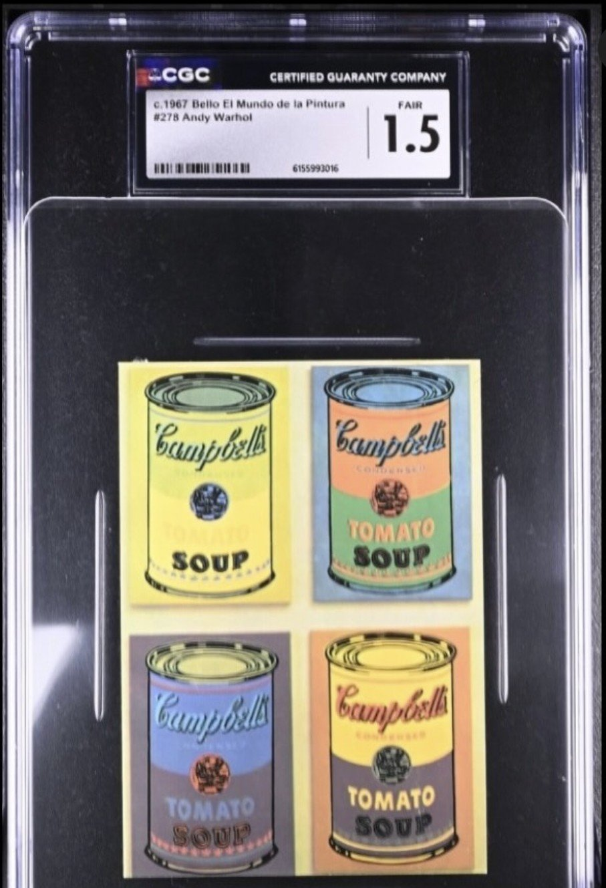
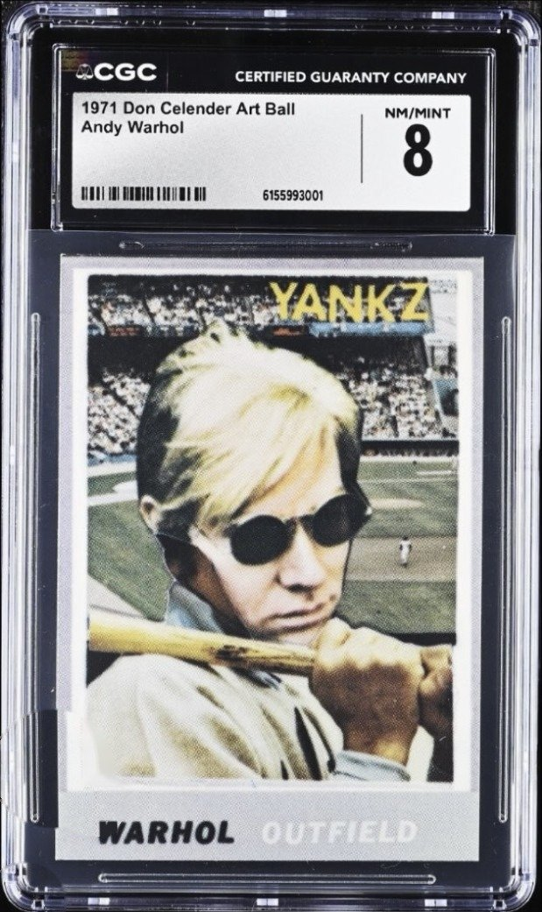
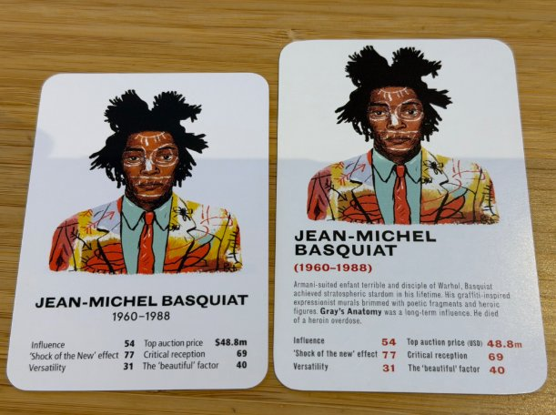
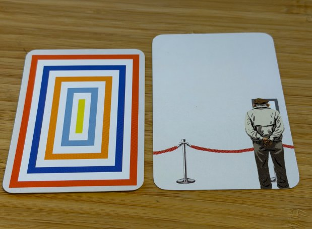
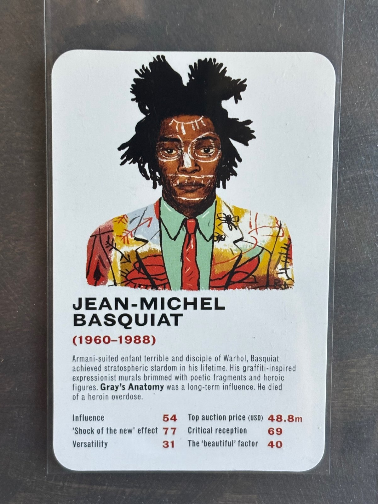
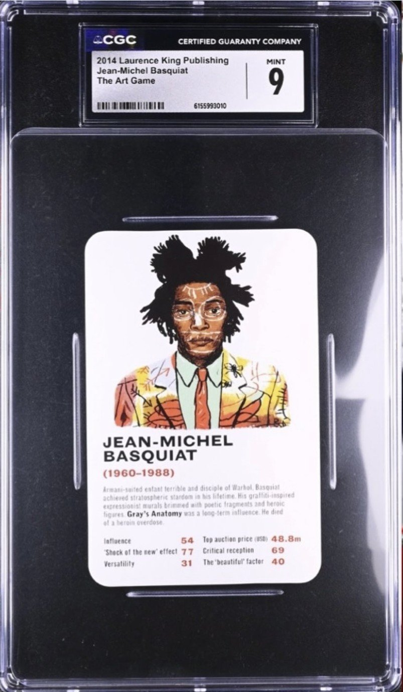
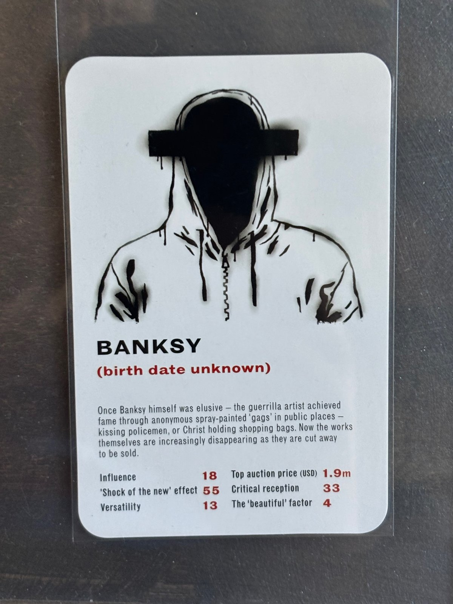
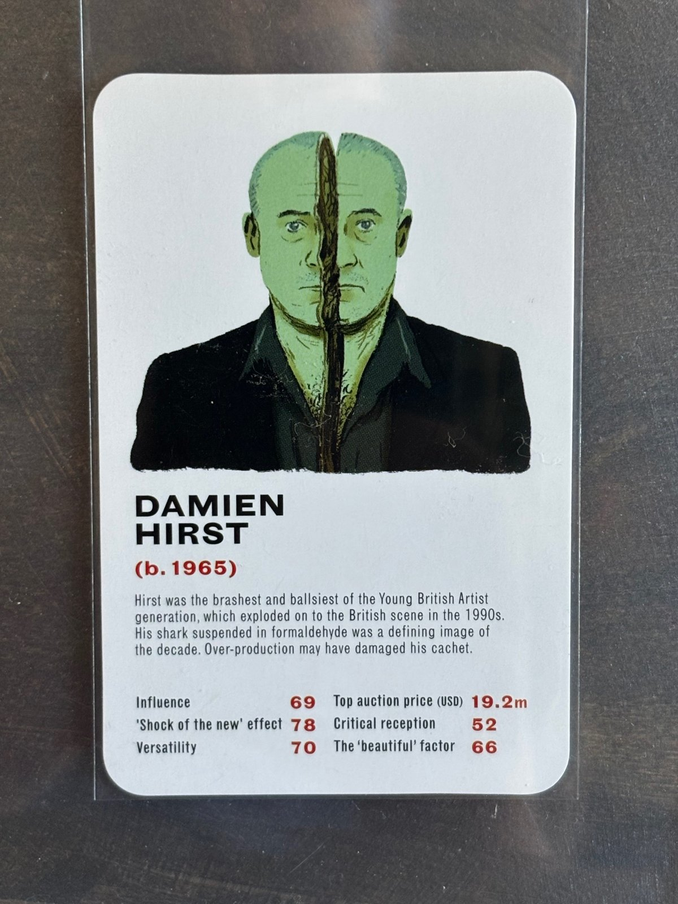
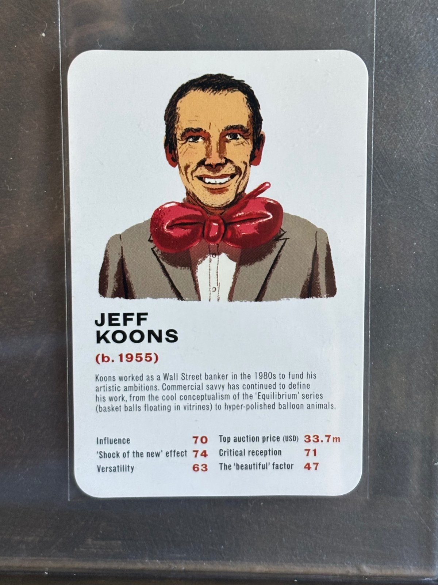
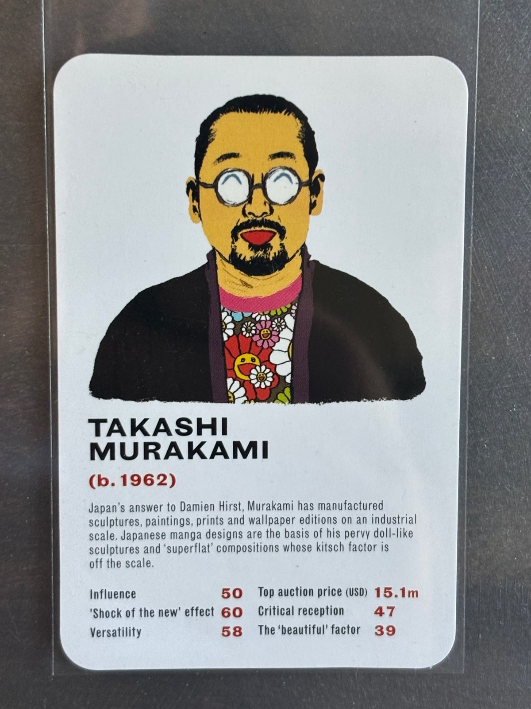

The 2014 Laurence King The Art Game: An Overlooked Treasure for Non-Sport Card Collectors
As a longtime non-sport trading card collector, I find it genuinely shocking that Jean-Michel Basquiat did not make his trading card debut until 2014. Basquiat caught fire in the early 1980s, and he has remained a cultural touchstone ever since. His influence on contemporary art and popular culture has endured for decades, making his absence from the trading card world all the more remarkable. I honestly can’t think of another comparably important cultural figure who went roughly three decades without appearing on a trading card, particularly given the 1980s and 1990s, when it seemed like the hobby was producing cards for practically every human being on the planet. For collectors who place a premium on first appearances, Basquiat’s inclusion in the 2014 Laurence King The Art Game is a genuinely significant discovery, and one that I suspect many collectors have yet to fully appreciate.
And Basquiat isn’t the only reason this set deserves attention. The 2014 edition also features the first trading card appearances of major contemporary artists including Damien Hirst, Jeff Koons, and Banksy, among others. That’s an extraordinary lineup of first appearances to find hiding in a relatively under-the-radar release. First appearances have long been a major draw for non-sport collectors, whether the subject is a beloved fictional character, a cultural icon, or a real-life figure whose influence extends far beyond the hobby. Yet artists of this stature have largely escaped the attention of collectors who might otherwise be eager to add their debut cards to their collections. The result is a set with considerable historical significance that remains surprisingly easy to overlook when discussing important non-sport releases.
The cards themselves are also beautiful objects. The artwork, color choices, and overall production quality give The Art Game an aesthetic appeal that goes beyond the importance of its checklist. This isn’t simply a set worth tracking down because of the names on the cards; it’s a set worth appreciating for how those artists are presented. Collectors should also be aware that there are two distinct versions: the original 2014 release and a later expanded edition. The two can be differentiated by the size of the cards, their card backs, somewhat different checklists, and variations in the colors used on some card fronts. For anyone pursuing these first appearances, distinguishing between the editions is essential.
A Question of Firsts
In 1999, Sleaze Nation magazine included trading cards in some of its issues, including cards depicting artwork by Banksy. This raises an interesting question for collectors who focus on artists’ first trading card appearances: does a card featuring an artist’s own likeness count as their first appearance, or should an earlier card depicting their artwork also qualify? A similar discussion applies to Andy Warhol, who was depicted in Don Celender’s 1971 Artball cards, while an earlier Spanish set, Bello’s c.1967 El Mundo de la Pintura (#278), featured his Campbell’s tomato soup can artwork. These distinctions can complicate the question of what constitutes a true first appearance, particularly when collecting artists rather than fictional characters or performers. For the purposes of this discussion, the distinction between a card depicting an artist and one depicting their work is worth keeping in mind.


The Set
Title: The Art Game: Artists’ Trump Cards
Publisher: Magma for Laurence King (Laurence King Publishing, London)
Released: Summer 2014 (UK listings give August to September 2014)
Text: James Cahill, a London art writer
Illustrations: Mikkel Sommer, a Danish illustrator born in 1987 who works in illustration, animation design, and comics
Cards: 32
Card size: 2 9/16” × 3 7/8”
ISBN: 97818566995321
The Art Game is a trumps-style card game, the same basic mechanic as Top Trumps. Each card pairs an illustrated portrait of an artist with a short bio and a set of ratings, and players pit artists against each other on six categories: Influence, “Shock of the New” effect, Versatility, Top auction price, Critical reception, and The “beautiful” factor.2 On the 2014 cards, the category scores and the artist’s birth and death years are printed in red.
Laurence King’s distributor, Hachette, has confirmed the 2014 release as the first edition, and the publisher and Hachette supplied the checklists for both editions.3 The set is listed on the Trading Card Database, and both SGC and CGC already grade it.4
The 2014 First Edition Checklist
The first edition has 32 artists:
Marina Abramović, Francis Bacon, Banksy, Jean-Michel Basquiat, Joseph Beuys, Louise Bourgeois, Maurizio Cattelan, Marc Chagall, Christo and Jeanne-Claude, Salvador Dalí, Marcel Duchamp, Lucian Freud, Andreas Gursky, Damien Hirst, David Hockney, Edward Hopper, Frida Kahlo, Jeff Koons, René Magritte, Henri Matisse, Piet Mondrian, Takashi Murakami, Bruce Nauman, Pablo Picasso, Jackson Pollock, Robert Rauschenberg, Gerhard Richter, Aleksandr Rodchenko, Mark Rothko, Cindy Sherman, Andy Warhol, Ai Weiwei.
Three of these artists, Damien Hirst, Andreas Gursky, and Ai Weiwei, appear only in the 2014 edition. They were dropped from the later reissue, so their 2014 cards are the only version in this set.
Beyond the four headliners, names like Ai Weiwei, Takashi Murakami, Maurizio Cattelan, Andreas Gursky, and Marina Abramović are worth a look for anyone chasing first appearances.
The 2020/2021 New Edition Checklist
The new edition has 50 artists. The 21 added for this edition are marked with an asterisk (*).
Marina Abramović, Njideka Akunyili Crosby, Diane Arbus, Francis Bacon, Banksy, Jean-Michel Basquiat, Joseph Beuys, Louise Bourgeois, Sophie Calle, Leonora Carrington, Maurizio Cattelan, Marc Chagall, Christo and Jeanne-Claude, Lygia Clark, Salvador Dalí, Sonia Delaunay, Marcel Duchamp, Tracey Emin, Lucian Freud, Nan Goldin, Guerrilla Girls, Mona Hatoum, David Hockney, Edward Hopper, Frida Kahlo, Jeff Koons, Barbara Kruger, Yayoi Kusama, René Magritte, Henri Matisse, Ana Mendieta, Piet Mondrian, Takashi Murakami, Bruce Nauman, Georgia O’Keeffe, Yoko Ono, Meret Oppenheim, Pablo Picasso, Jackson Pollock, Robert Rauschenberg, Paula Rego, Gerhard Richter, Bridget Riley, Aleksandr Rodchenko, Mark Rothko, Cindy Sherman, Hito Steyerl, Kara Walker, Andy Warhol, Rachel Whiteread*.
Telling the Editions Apart
The “Red Number” first edition (2014)
- Red numbers. The category scores and the birth and death years are printed in red.
- Artist bio. Each card has a paragraph describing the artist. The new edition does not.
- Card back. An elderly man seen from behind, standing in front of a painting in a museum.
- Size. 2 9/16” × 3 7/8”, larger than the new edition.
- Checklist. 32 artists.
The “Black Number” new edition (2020/2021)
Laurence King reissued the game as The Art Game: New Edition, Fifty Cards, with a new ISBN (9781786277183). The expanded deck has 50 cards and was rebuilt to address the gender imbalance of the original, with an equal split of male and female artists. Holly Black joined James Cahill as co-writer, and Mikkel Sommer returned as illustrator.5 The box carries a 2020 copyright. The publisher’s US site dates it to September 22, 2020, and its UK site to March 4, 2021.6
- Black numbers only. No red numbers appear anywhere on the front.
- No artist bio on the card.
- Card back. Concentric rectangles in various colors.
- Size. 2 1/2” × 3 1/2”, standard trading card size.
- Checklist. 50 artists: 29 carried over from 2014, plus 21 new.
Basquiat, Koons, and Banksy all carried over, so each has a card in both editions. For those three, only the red-number 2014 card is the first appearance. Hirst is the reverse case: he was dropped from the new edition, which means every Hirst card from this set is a 2014 first edition. (Retailer copy for the new edition still uses “Hirst or Emin” as a hook, but Hirst isn’t in the 50-card checklist.)
The quick test: If the numbers on the front are red, it’s the 2014 first edition. If they’re all black, it’s the new edition.


Key Cards
What makes Sommer’s portraits work is that most of them fold the artist’s own work into the picture. Basquiat wears one of his paintings as a suit, Koons wears a balloon sculpture as a bow tie, and Hirst is split down the middle like one of his bisected animals.
Jean-Michel Basquiat

This is Basquiat’s first trading card appearance. He was carried over into the new edition with the same portrait, so check for red numbers to be sure you have the 2014 card.

Banksy

Sommer solves the problem of an artist with no public face by not drawing one. Banksy appears as a black-and-white stencil of a hooded figure, his face blacked out and a censor bar sprayed across his eyes, with paint drips running down the hoodie. In place of dates, the red line reads “(birth date unknown).”
Banksy also appears in the new edition, so the red-number check matters here too. Some collectors may point to the Sleaze Nation material (see “A Question of Firsts” above) as an earlier appearance, but this is the first card to depict Banksy himself rather than his work.
Damien Hirst

Hirst gets the most unsettling portrait in the deck. His face is tinted a formaldehyde green and split down the middle by a jagged crack, an obvious nod to the sliced and preserved animals that made his name.
Hirst is the one headliner who was dropped from the new edition. Every Hirst card from this set is a 2014 first edition, with no reprint to confuse it with.
Jeff Koons

Koons is drawn grinning in a grey suit, with a giant glossy red bow at his neck rendered like one of his balloon sculptures.
Koons was carried over into the new edition, so look for red numbers.
Takashi Murakami

Murakami wears a dark cardigan over a shirt covered in his signature smiling flowers, and Sommer gives him round glasses with the closed, curved eyes of one of his cartoon characters.
Murakami is another debut trading card appearance for a major contemporary artist. He was carried over into the new edition, so the red-number check applies.
Notes
- Publication details per UK retailer listings for ISBN 9781856699532 (Lehmanns, Collins Booksellers), which give publication dates of August and September 2014.
- Rating categories per the publisher description and an Italian review at frizzifrizzi.it (September 2014).
- Edition identification, card sizes, and both checklists per the author’s grading submission dossier for The Art Game (August 2026). The checklists were supplied by Laurence King Publishing and its distributor, Hachette.
- Trading Card Database, “2014 Laurence King The Art Game” (tcdb.com, set 384406).
- Per Laurence King’s product listing and retailer copy for ISBN 9781786277183.
- us.laurenceking.com and laurenceking.com product pages for The Art Game.